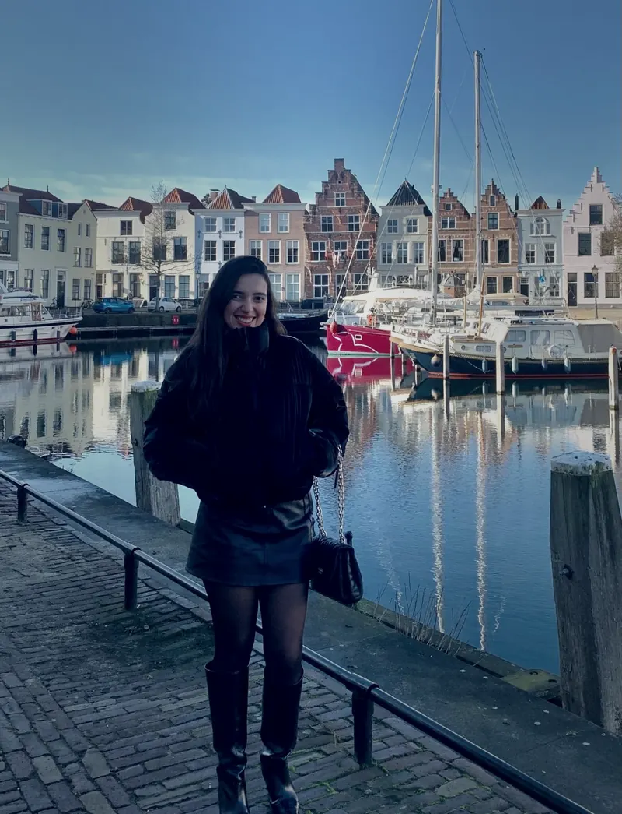

Klanten komen alleen via mond-tot-mondreclame
Werk komt via mond-tot-mondreclame. Als de aanbevelingen stoppen, stopt de maand mee — en er is geen andere weg waarlangs klanten u bereiken.
Websites en SEO in het Portugees
U heeft een bedrijf in Nederland en uw klanten kunnen u niet vinden op Google. Ik bouw uw website en zorg dat uw klanten u vinden.
Zij kunnen Nederlands zijn, en u spreekt misschien alleen Hallo! Alles goed? — maar ze zullen uw dienst vinden. En het mooiste: ik leer uw bedrijf kennen in uw moedertaal, het Portugees.

Het probleem
Werk komt via mond-tot-mondreclame. Als de aanbevelingen stoppen, stopt de maand mee — en er is geen andere weg waarlangs klanten u bereiken.
Mensen zoeken elke dag naar uw dienst in uw stad. Ze vinden concurrenten die minder goed werk leveren dan u, omdat die wél verschijnen en u niet.
Bureaus hier helpen, offreren en leggen alles uit in het Nederlands. Iemand inhuren wordt dan geld riskeren in een gesprek dat u niet volledig volgt.
Diensten
Drie diensten. Geen verwarrende pakketten en geen kleine lettertjes.
Uw professionele website vanaf nul gebouwd en binnen 14 dagen online. Werkt goed op mobiel, laadt snel en toont uw bedrijf zoals het verdient gezien te worden.
Uw website wordt vanaf het begin goed opgebouwd, zodat Google begrijpt waar elke pagina over gaat en die toont aan wie zoekt naar wat u doet.
Heeft u al een website en wilt u beter gevonden worden? Ik werk aan de SEO van wat er al is, zonder alles opnieuw te doen. We praten en kijken wat in uw geval zinvol is.
Hoe het werkt
Vanaf dag één weet u wat er gaat gebeuren en wat er van u verwacht wordt.
Dag 1 tot 3
Een gesprek van 30 minuten, in het Portugees. U vertelt over uw bedrijf, wie uw klanten zijn en wat de website moet doen. Ik vraag om teksten, foto's en het logo, als u dat heeft. Zo niet, dan lossen we dat samen op.
Dag 4 tot 10
In deze fase hoeft u niets te doen. Ik zet de pagina's op, schrijf en orden de inhoud, en regel de techniek waardoor Google de site vindt. Daarna stuur ik het naar u toe.
Dag 11 tot 14
U geeft aan wat u wilt veranderen — 2 revisierondes zijn inbegrepen. Ik pas het aan, we publiceren, en ik zet Google Mijn Bedrijf op zodat uw bedrijf ook op Google Maps verschijnt.
Voor wie al een website online heeft en wil dat klanten die vinden.
Dag 1
Ik doe een algemene analyse van uw website om te zien waar de technische SEO-fouten zitten die aangepast moeten worden. Op basis daarvan geef ik u een offerte voor het zoekwoordenonderzoek zodat we kunnen beginnen.
Dag 5
Hier laat ik zien wat er nodig is voor een maandelijkse inspanning om uw website te laten groeien. Ik onderzoek in detail de meest gezochte woorden van mensen die uw dienst zoeken, bepaal een route om samen zo snel mogelijk een positief resultaat te bereiken, en presenteer het maandelijkse SEO-plan.
Dag 6
Met de nodige technische aanpassingen, professionele content en backlinks — wanneer een andere site naar de uwe verwijst — begint uw bedrijf relevantie op te bouwen. In de eerste drie maanden zien we de eerste resultaten.
SEO
Veel mensen beweren het te doen. Omdat u het niet kunt controleren, staat hier precies wat er in uw website zit — zonder termen die u zelf moet opzoeken.
In het begin weet niemand wie u bent. Uw naam zegt niemand iets, en vertrouwen wint u met tijd en aanwezigheid. Bij Google gebeurt hetzelfde: een nieuwe website heeft tijd nodig om serieus genomen te worden, hoe goed hij ook gebouwd is.
Dat is het werk dat doorgaat na de oplevering. Gedurende ongeveer 3 maanden werk ik aan de woorden die uw klanten in Google typen, met als doel de eerste pagina te bereiken en gevonden te worden door wie uw dienst zoekt.
Maand 1
Ik herstel de technische fouten die Google beletten de site goed te lezen, en we bepalen de woorden die uw klanten echt typen als ze zoeken naar wat u doet.
Maand 2
Ik schrijf en orden content rond die woorden. Dit is wat Google laat begrijpen waar uw bedrijf over gaat — en het is het deel zonder shortcut.
Maand 3
Ik werk eraan dat andere websites naar de uwe verwijzen. Elke vermelding is alsof iemand die hier al woont zegt dat u te vertrouwen bent — en zo begint uw positie te stijgen.

En als Portugees uw moedertaal is, weet u precies waar ik het over heb.
Wanneer je die grote stap zet naar een land dat je niet kent, leer je dat veerkracht niet alleen luider moet spreken — het moet schreeuwen. En ondernemen in een land waarvan je de taal niet begrijpt, voelt onmogelijk zonder iemand die helpt.
Daar kwam mijn bedrijfsidee vandaan. Ik ben immers in minder dan 5 jaar twee keer van land veranderd. Dus ik begrijp hoe moeilijk het is om opnieuw te beginnen — en opnieuw beginnen in een andere cultuur, een andere taal, zonder iets vertrouwds om je heen, voelt als opnieuw geboren worden.
Daarom is het mijn doel om ondernemers — Braziliaans, Portugees, Angolees, Mozambikaans — te helpen hun droom te bouwen. Want meer dan wie ook weet ik dat wij het verdienen.
Het SEO-traject is een aparte dienst naast de website, en is pas zinvol wanneer u die stap wilt zetten. We praten wanneer het zover is.
Prijzen
Lanceringsaanbieding
vanaf €199 €799 excl. btw
Dit is een lanceringsaanbieding, voor beperkte tijd en met een klein aantal plaatsen per maand. Ik werk met weinig klanten tegelijk zodat elke website dezelfde zorg krijgt — als de plaatsen onder deze voorwaarde op zijn, gaat de prijs terug naar normaal.
Websiteonderhoud — €19,90/maand optioneel
Inclusief hosting, het domein en onderhoud van de website. U hoeft niets te regelen of te begrijpen: ik zorg voor alles.
Wilt u hosting en domein liever zelf regelen, dan kan dat: ze blijven op uw naam, en ik help u kiezen en instellen, in het Portugees.
Meer dan 5 pagina's nodig? Geen probleem — ik maak een aparte offerte en u weet het bedrag voordat u beslist.
Op aanvraag
Heeft u al een website en wilt u beter gevonden worden op Google? Elk geval is anders, en het zou geen zin hebben een prijs te verzinnen voordat ik zie wat u heeft. We praten eerst.
Vragen
Weinig, en alles aan het begin: een half uur gesprek, de teksten of de ideeën van wat u wilt zeggen, een paar foto's en het logo, als u dat heeft.
Heeft u geen teksten klaar en geen foto's, zeg het dan. Dat houdt niets tegen — we lossen het samen op in het gesprek.
Elke website heeft hosting en een domein nodig — het adres van de site, bijvoorbeeld www.oseunegocio.nl — om online te blijven. Dat zit niet bij de prijs van de website in, en u kunt het op twee manieren regelen.
Ik regel alles voor €19,90 per maand, excl. btw. Dat bedrag dekt hosting, het domein en onderhoud van de website. U hoeft niets van techniek te weten en niets in het Nederlands te regelen.
Of u regelt het zelf, rechtstreeks bij de provider, en alles blijft op uw naam. Ook dan blijf ik naast u staan, help ik kiezen en instellen, in het Portugees en zonder extra kosten.
U kiest wat u het liefst wilt, en u kent de bedragen voordat u beslist. Geen verrassingen op de factuur.
Na de 2 inbegrepen revisies is elke wijziging los werk. Het gaat zo: u vertelt wat u nodig heeft, ik zeg wat het kost voordat ik begin, en het gaat alleen door als u akkoord gaat.
Er is geen contract en geen verplichting. Het maandelijkse onderhoud is optioneel en, als u ooit wilt stoppen, stopt u.
Ja. De website is van u: de inhoud, de tekst, de afbeeldingen en het ontwerp van de pagina's horen bij uw bedrijf.
Als u hosting en domein zelf regelt, staan ze vanaf het begin op uw naam, en ik begeleid het hele proces in het Portugees.
Het is uw bedrijfsvermelding op Google. Het zorgt ervoor dat er een blok verschijnt — met uw naam, openingstijden, telefoonnummer en locatie op de kaart — wanneer iemand in uw omgeving naar uw dienst zoekt.
Voor wie met klanten uit de regio werkt, levert dit meestal de meeste aanvragen op. Het wordt bij uw website ingesteld zonder extra kosten.
Ik zit in Enschede, maar werk op afstand met het hele land. In dezelfde stad zitten was nooit nodig om een website te bouwen: we regelen alles per gesprek.
Ik werk in het Portugees en Engels. Het hele proces — offerte, vragen, revisies, oplevering — verloopt in uw taal.
Een half uur, in uw taal, vrijblijvend. U vertelt wat u doet, ik zeg eerlijk of ik kan helpen en wat het kost. Als het geen zin heeft, zeg ik dat ook.
Liever schrijven? Stuur een WhatsApp-bericht ou stuur een e-mail.